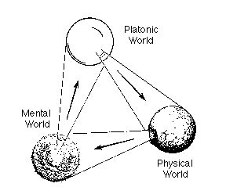
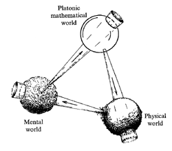
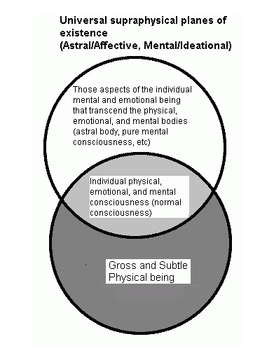
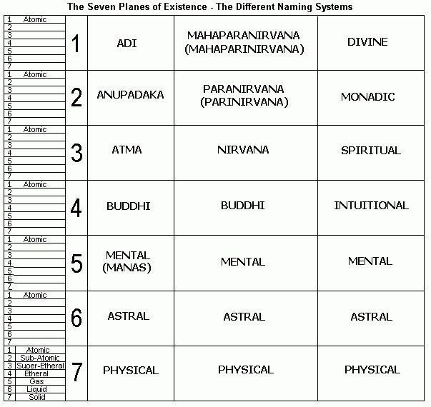

Penrose views it like
this:  
In this the physical world is just a
projection of the platonic world which
itself is a projection of the mental world
that arises from the physical world.
Its like saying that the real world exists
because it gets its structure from the
platonic world which we grasp with out
brains which is a product of the real
world...ect...ect.
Loops and loops. Everlasting and without
beginning or end . Without feeling and only
real a fraction of the time.
In another version we get the same but with
a slight adjustment:
Eek!, its rather hard to talk about the
abstract with only written language but i
feel like im posting too many pictures
|
This amazes
me because it's is exactly the
same description that hinduism
gives of the 3 planes of
existence, imho if many cultures
reached the same conclusion
there must be something there.
 Now, I want to share this it is the 7 planes of existence according to vedanta and buddhism. Theosophy teaches that there are different planes of reality in the universe, such as the physical plane, the astral plane, etc. There are a total of seven planes of existence. The seven planes of existence, from the highest to the lowest, are:
 The seven substance-principles of the human constitution: the higher triad: 1. spirit (atman); 2. spiritual soul (buddhi); 3. mind (manas) the lower quaternary: 4. animal desires and passions (kama); 5. life or vital principle (prana); 6. astral body (linga-sharira); 7. physical body (sthula-sharira). (see Key 92-3) 1. Atman The essential self, pure consciousness. The essential and radical power or faculty which gives us and every other entity its sentient consciousness of pure selfhood. 2. Buddhi The faculty or spiritual organ which manifests as intuition, understanding, judgement, discrimination. It is the inseparable veil or garment of atman. 3. Manas The centre or organ of the ego-consciousness in man and in any other quasi-selfconscious entity; the seat of the ‘I am I’. 4. Kama The organ or seat of the vital psycho-electric impulses, desires, aspirations, considered in their energic aspect, and therefore the driving force in the human constitution. As every principle is sevenfold, there is a divine and spiritual kama as well as a grossly emotional kama, with all intermediate stages. 5. Prana ‘Life’, or more accurately the electromagnetic veil or ‘electrical field’ manifesting in the individual as vitality. 6. Linga- sharira The astral model-body, slightly more ethereal than the physical body; the astral framework around which the physical body is built, atom for atom, and from which it develops as growth proceeds. 7. Sthula- sharira The physical body. Strictly speaking, it is not a real ‘principle’, but functions as the common ‘carrier’ of all the inner constitution during any lifetime on earth. |
http://www.city-data.com/forum/religion-philosophy/299113-g-o-d-2.html